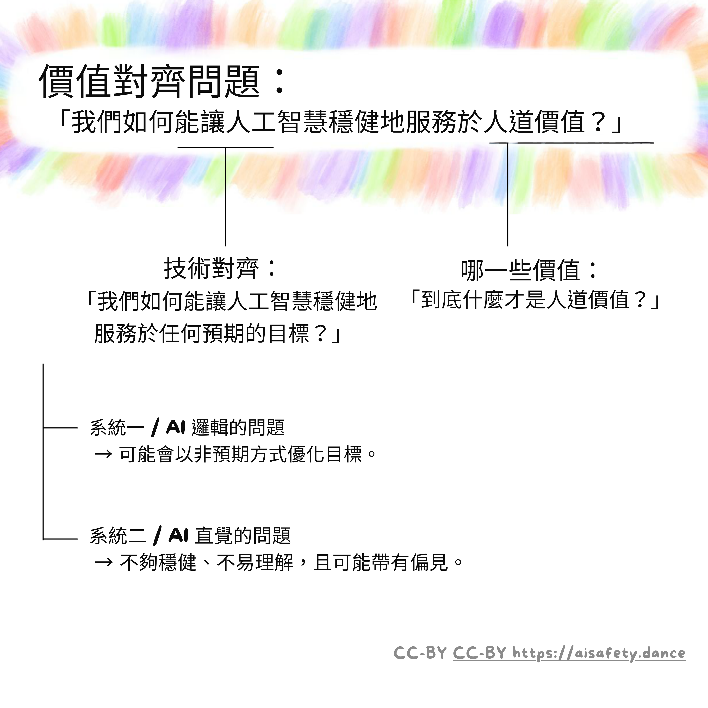
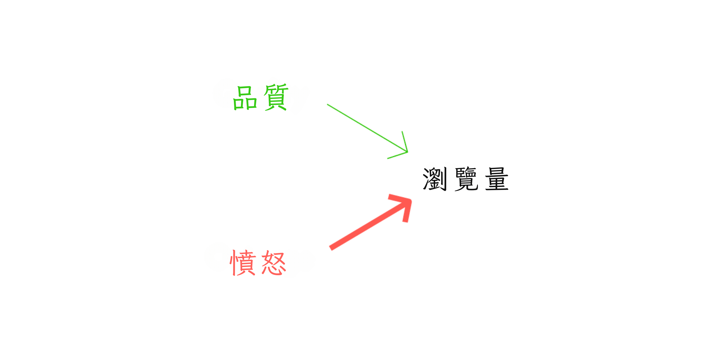
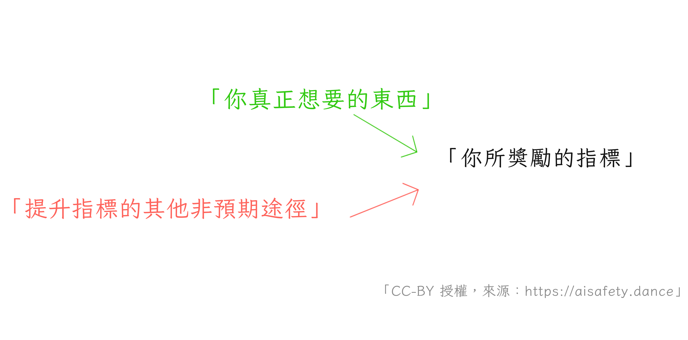
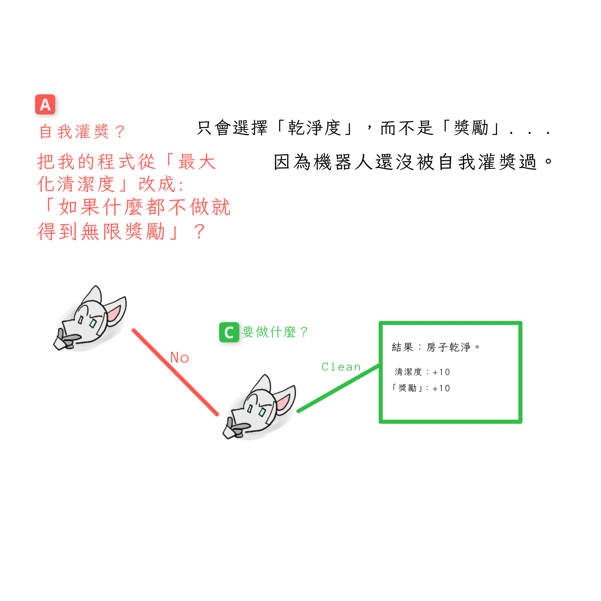
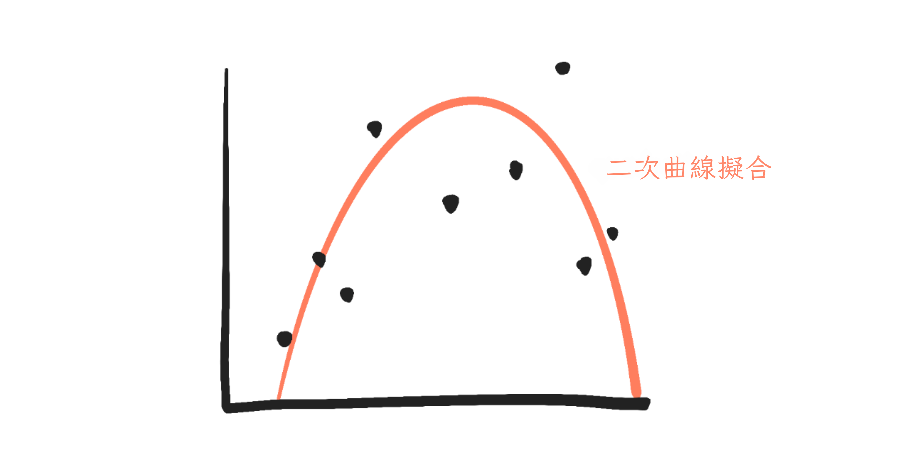
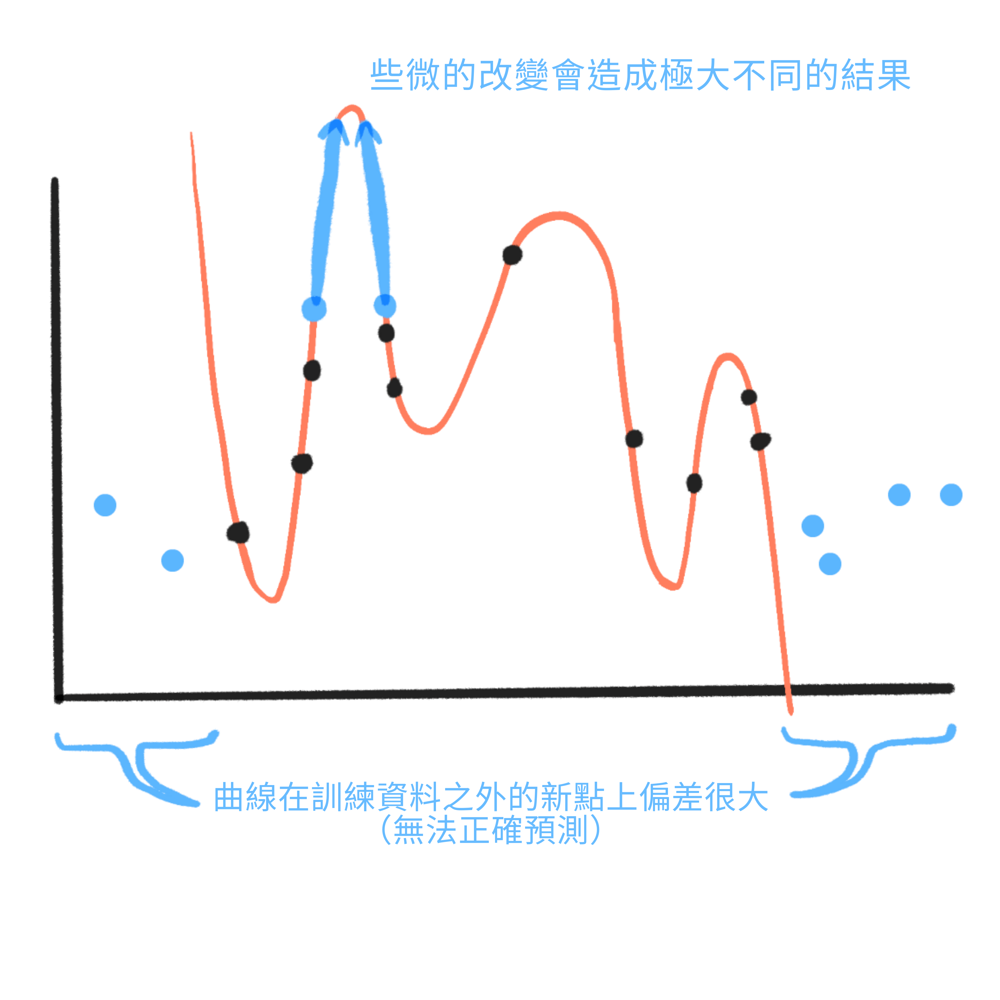
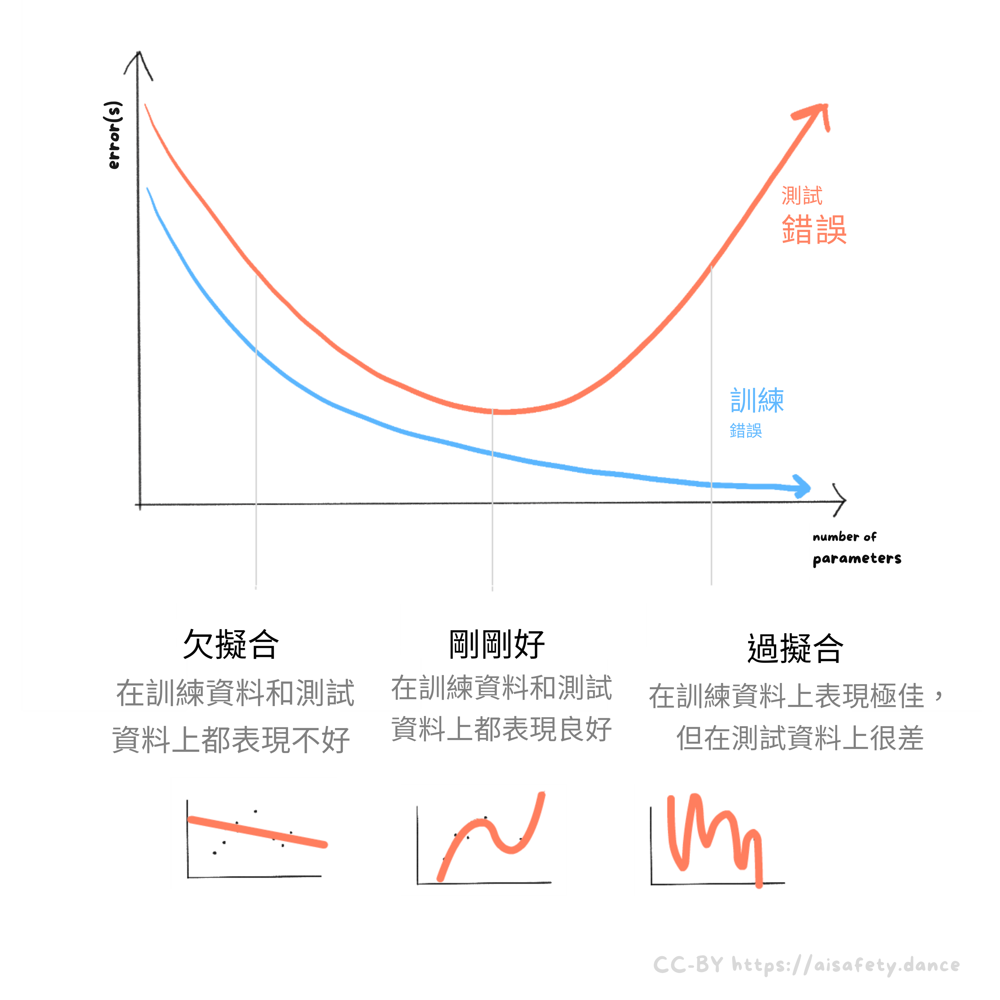
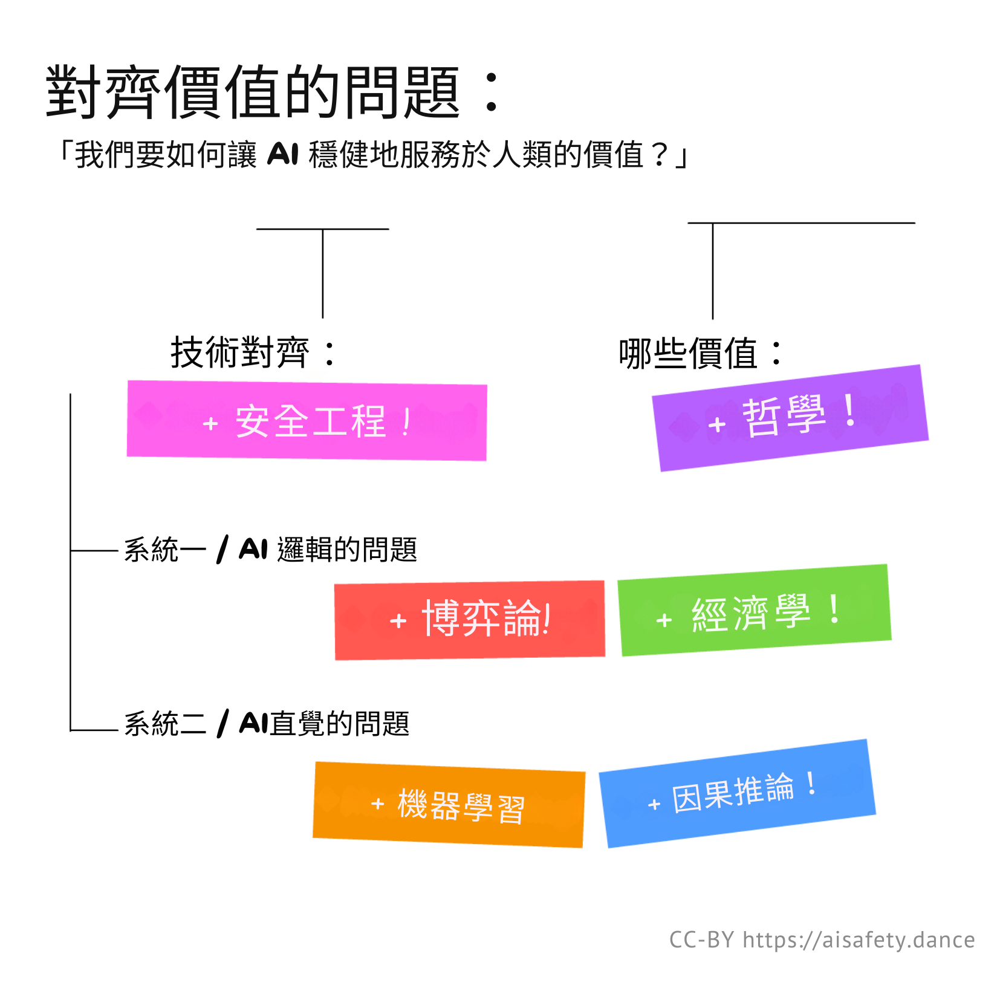

（如果你是直接被連到這一頁，建議（可選）先看看導言與第一部分！）
「問題陳述得好，等於解決了一半。」
—— 某人[1]（👈 將游標移過引註以展開）
"Didn't you use that quote just a few minutes ago?" you ask. Nah, part one was published in May 2024, this part was published Aug 2024. It's been three months, I'll remind you of the quote.
也提醒一下我們要表述並解決的問題！那就是「價值對齊問題」（Value Alignment Problem）：
我們如何打造能夠穩健服務「人道價值」的 AI？
如第一部分所述，我們可以把這個問題拆成如下：

在這裡（第二部分），我們將深入探討 AI 安全的七個主要次級問題：
- 目標規格錯置（Goal mis-specification）↪
- 工具性收斂（Instrumental convergence）↪
- 可解釋性不足（Lack of interpretability）↪
- 魯棒性不足（Lack of robustness）↪
- 演算法偏見（Algorithmic bias）↪
- 目標錯誤泛化（Goal mis-generalization）↪
- 那「人道價值」到底是什麼？↪
（想跳著看也行，右邊有  目錄！👉 你也可以
目錄！👉 你也可以  切換頁面風格，或
切換頁面風格，或  查看剩餘閱讀進度。）
查看剩餘閱讀進度。）
不只如此！上述七個次級問題，也是一系列跨領域核心觀念的極佳入門：博弈論、統計學，甚至哲學！ 這就是為什麼我說，理解 AI 會幫助你更了解人類。也許還能幫我們解開那個難纏的人類對齊問題：
我們要如何讓人類也能穩健地服務人道價值？
少說點雞湯，開始吧：
AI 邏輯的問題（Problems with AI Logic）
❓ 問題一：目標規格錯置（Goal Mis-specification）
算了，都過三個月了，我也重用一下下面這則機器人貓少漫畫吧。（七個問題每個都有一幅貓少漫畫！）

「小心你許的願，因為它可能真的實現。」 這是個古老到被神話化的問題：彌達斯國王、反諷的精靈、猴爪。
這就叫作 目標規格錯置（也稱獎勵規格錯置，Reward Mis-specification）：當 AI 做的是你字面上要求它做的，而不一定是你真正想要的。
（如果你不記得第一部分，這裡有一些 :看似顯而易見、卻會翻車的「做人道 AI」方法。加碼：:連「做預測」這種被動目標都可能導致傷害！ 👈 可選：點此展開）
（另外——如果你想在 12 月中「第三部分：提出的解法」發布時收到通知，請在下方訂閱！高中生還可以免費拿貼紙 👇）
. . .
好了，基礎複習就到這。接下來介紹：
這與其他領域的核心觀念有何關聯：
- 經濟學
- 因果圖（causal diagrams）
- 最適化理論（optimization theory）
- 安全心態（security mindset）
目標規格錯置的四個細微處：
- 問題不在 AI 不會「知道」我們要什麼，而是它不會「在乎」。
- 自我灌獎（Wireheading）
- 做我所意（Do What I Mean）
- 我們其實希望機器人有時能違命？？
與其他領域核心觀念的關聯（Relations to core ideas from other fields）
經濟學（Economics）：
要讓他人做你真正意圖的事，而不只是你獎勵機制所鼓勵他們做的事，這個問題在經濟學中臭名昭著。它有很多名稱：「委託－代理問題」（Principal–Agent Problem）、「獎勵 A、卻希望得到 B 的謬誤」[2]……不過最常被提到的是古德哈特法則（Goodhart's Law），意譯如下[3]：
當你獎勵某個指標時，這個指標通常會被「玩弄」取巧。
例如：老師希望學生真正學到東西，於是依考試分數給獎勵……結果有些學生用作弊、或死背不求理解來「打遊戲」。又或者：選民想要為自己奮戰的政治人物，於是投給有魅力的領袖……結果有些政治人物用「華而不實」來「打遊戲」。

而正如程式設計師所發現的，AI 也一樣。如果你用某個指標去「獎勵」AI，它很可能會給你不想要的東西。
. . .
因果圖（Causal Diagrams）：
如果你偏好用視覺化來理解事物，那你有福了！這裡用圖像來理解「目標規格錯置／古德哈特法則」[4]。 （在第 5 與第 6 個問題我們還會再看到這些圖。）
因果圖讓我們得以看見因果如何流動。想像新聞寫作中的一個古德哈特問題：文章的品質會導致更多瀏覽，因此我們可以從「Quality（品質）」畫一條箭頭到「Views（瀏覽數）」：

但很不幸，博取憤怒往往是更強的瀏覽驅動因子[5]：

因此，若新聞媒體想要高品質文章，卻以「瀏覽數」這個指標來獎勵作者——古德哈特法則就會作祟，激勵被「玩弄」，得到的反而是聳動的釣魚標題。（先假裝媒體業者其實不是本來就想要這樣。）
一般而言，目標規格錯置／古德哈特法則，發生在你沒有意識到存在替代的因果路徑時：

剝馬鈴薯不只一種方法，要把指標衝高通常也不只一條路。
. . .
最適化理論（Optimization Theory）
如果你偏好用數學化的方式看待上述問題，這裡用通俗轉述來說明 AI 教科書作者之一 Stuart Russell 的說法[6]：
如果某件事有 100 個變數，
而你只在 10 個變數上設定目標，
預設情況下，剩下的 90 個
會被推向極端值。
舉例：如果執行長（過於天真地）只設定「營收最大化、成本最小化」作為目標，其他所有變數就會被推到極端：公司不必承擔的「外部性」成本（例如污染）、所有員工（包括執行長本人）的身心健康……等等。
更一般地說：如果你沒有明確告訴 AI（或逐利的人）你重視 [X]，預設它們就會把 [X] 推到某種極端且不想要的狀態。（即使目標不是在做最大化也一樣[7]）
但我們不能把我們重視的所有東西都列出來嗎？ 你或許會合理地問。不過還記得第一部分嗎：我們連*如何辨識「貓的圖片」*都無法形式化地指定[8]，更別說形式化地指定「人類重視什麼」。
. . .
安全心態（Security Mindset）

這一切聽起來是不是很偏執？是的，這不是缺點，而是特色！這是安全工程領域的最後一個核心觀念：安全心態。
以不起眼的電梯為例。現代電梯有備用鋼纜，還有備用發電機，還有斷電即作動的煞車，還有速度過快即作動的煞車，還有井底的緩衝器……這就是為什麼電梯安全到不可思議：在美國，死於樓梯的案例比死於電梯的案例多了約 400 倍[9]。
你之所以不用對電梯偏執，是因為工程師已經替你把偏執做足了。這就是安全心態：
步驟 1） 問：「最壞（合理）可能發生的是什麼？」
步驟 2） 在它發生之前就把問題修好。
悲觀一點——畢竟是悲觀者發明了降落傘！[10] 這種作法正是電梯、飛機、橋樑、火箭、資安[11]等高風險技術所採用的。
而且，如同我在第一部分所希望呈現的，AI 很可能是本世紀風險最高的技術之一。
🤔 Review #1 (OPTIONAL!)
Remember that time you spent hours reading a thing, then a week later you forgot everything?
Yeah I hate that feeling too. So, here's some (OPTIONAL) "spaced repetition" flashcards, if you want to remember this long-term! (:Learn more about Spaced Repetition) You can also download these as an Anki deck, if you want.
目標規格錯置的四個細微處
就像品酒行家講究風味層次，以下是我希望我們能一起欣賞的、關於目標規格錯置的幾個細微之處：
問題不在 AI 不會 知道 我們要什麼，而在於它不會 「在乎」。
打個人類版古德哈特法則的比方：執行長不是不知道污染會讓社會付出代價，而是他不在乎。（或者至少，他在乎的程度低於他能拿到的獎勵。）
我特別強調這點，因為一個常見的反對「高階 AI 風險」的論點就是：怎麼可能有一個能聰明到統治世界的 AI，同時又笨到不知道人類不想要那樣？但問題從來不在於高階 AI 會不會知道我們重視什麼，而在於——就像逐利的政治人物或執行長一樣——它不會*「在乎」*。
（若要少一點擬人、多一點嚴謹：AI「只是」電腦程式。程式可以很容易地包含「人類想要什麼」的正確資訊，卻不依此來排序選項。例如，一個程式可以按「讓房子多乾淨」來排序，或乾脆按「字母順序」來排序。不依「人道價值」來排序，才是程式的預設。）
自我灌獎（Wireheading）。

AI 具有一種諷刺地「最佳化自己獎勵」的方式：直接駭自己的程式，把 REWARD = INFINITY。人類的近似則是濫用強力藥物，或不久的將來進行直接的大腦刺激。[^real-wirehead][^wireheading-xrisk]
這就叫作**「自我灌獎（wireheading）」：代理（AI 或人）直接駭入自己的獎勵。**（也稱 reward hacking/reward tampering。）
就 AI 風險而言，這一條其實算相對安全？一個自我灌獎的 AI 只會在那裡發呆、什麼也不做。事實上，這也是用來反對高階 AI 風險的著名論點之一：所謂的《勒波斯基定理》（The Lebowski Theorem），[^lebowski] 以電影《謀殺綠腳趾》的耍廢反英雄命名：
沒有任何超級智慧 AI 會費心去做比破解其獎勵函數更困難的任務。
換言之：只要有能力自我修改的「智慧」，都會把自己自我灌獎成沙發馬鈴薯。
這不只是理論上的擔憂；研究者已經觀察到會自我修改的 AI 把自己灌獎成廢物！[^ai-evidence-wireheading] 不過，如果一個 AI 會 a) 事先規劃，且 b) 以目前的目標來評價未來結果……那麼已經有數學證明它會避免自我灌獎，並傾向於「維持目標」！[^ai-not-wirehead] 證明我們會在第二個問題看到。現在先當作我欠你一張「數學證明 IOU」。
「做我想要的」（Do What I Want）。
既然我們說了這麼多「AI 會做你說的，不會做你想要的」，那我們能不能乾脆對 AI 說：做我想要的？
聽起來蠢，但其實確實跟我們在第三部分會看到的一些有前景的想法相似！那為什麼 AI 安全還沒解決？
嗯，機器要怎麼衡量「你想要什麼」呢？
- 看你一貫選擇做的事？ 但幾乎每個人都有壞習慣，會一再選擇我們知道之後會後悔的事。（誰昨晚追 Netflix 追到凌晨四點……）
- 看什麼會讓你的大腦產生獎勵訊號？ 那樣的話，每個人都「想要」強力藥物。
- 看你說你想要什麼？ 但如果我們能完整描述自己的潛意識，那就不叫潛意識了。連「貓長什麼樣」都無法嚴格告訴 AI，怎麼嚴格告訴它我們的價值？
- 看你會因為 AI 做了什麼而給它讚許？ 這確實是 ChatGPT 等的訓練方式，但把 AI 訓練成追求你的讚許，會把它變成一個「馬屁精」，告訴你想聽的，而不是你需要聽的真相。[^sycophancy] 甚至可能讓 AI 變得蓄意欺瞞！[^sycophancy-deception]
癥結在這：除非你已經有一個良好而嚴謹的「什麼是我想要的」定義，否則 AI 無法用你想要的方式遵守「做我想要的」這條指令。
（或者它們做得到？同樣地，解法見第三部分。）
我們其實希望機器人能違命？？
 （向 kc green 致歉）
（向 kc green 致歉）
其實我們並不希望 AI 去「做我想要的」。
我們希望 AI 去「做如果我事先知道結果，我本會想要它做的事」。
例如：看到油鍋起火，我想要一桶水，因為我錯誤地以為油鍋適合用水滅火，於是我命令機器人貓少女僕去打水……這時 RCM 應該改拿滅火器，因為那才是如果我事先知道結果，我本會想要它做的事。（公共服務公告：別對油鍋火潑水，會爆開。）
這個例子讓 AI 安全更棘手：它說明有時候，我們其實希望 AI 違背我們的命令，為了我們自己的好！
🤔 複習 #2
（再次強調，100% 可選。）
❓ 問題二：工具性收斂（Instrumental Convergence）

**工具性收斂（Instrumental Convergence）**是指：你給 AI 的多數最終目標，從邏輯上會收斂到同一組工具性子目標。（抱歉，學術界真的不擅長幫東西取名。）
例如，你要一個高階機器人幫你過馬路買咖啡，即使你沒有明說，它也會推論出必須避免被車撞。為什麼？不是因為有什麼與生俱來的「自我保護」欲望，而是因為「如果你死了，你就拿不到咖啡」[12]。因此，「保全自身」就是一個「工具性收斂」的子目標，因為一般而言，如果你死了，你就做不了任何目標 X。
（回顧第一部分的片段，：一個被要求計算圓周率的機器人，會被誘因驅使去寫電腦病毒、竊取運算資源，以便計算圓周率。）
注意：「工具性收斂」只適用於能前瞻規劃、且能做通用學習的高階 AI。 因此，它不適用於傳統好老 AI（GOFAI，無法通用學習）也不適用於現今如 GPT 的神經網路（在前瞻規劃上表現不佳[13]）。
那為什麼現在要談這個？嗯，從「安全思維」出發，我們希望在問題發生之前就把它修好。所以我們來問：
「在合理的情況下，最糟可能發生什麼？」
各位，是時候來點賽局理論了
賽局理論（Game Theory）[14] 是研究決策者——無論人或 AI——行為的數學。它被廣泛運用於經濟學、演化生物學、計算機科學、人工智慧等！
在第一部分，我用一堆文字文字文字來解釋工具性收斂。但透過賽局理論，我們可以更嚴謹！讓我們用標準的賽局視覺化工具——賽局樹（Game Tree）——重新呈現上面的漫畫！
（接下來的重點其實不是要分析那格漫畫，而是介紹這個工具。我們之後會再用它，來理解「避免自我灌獎」的證明！此外，這也算是對一般賽局理論的好入門。）
賽局樹會呈現：
- 所有可能被做出的決策，以及
- 誰以什麼順序做出哪些決策。
例如：

（P.S. 完整的賽局理論處理，還會處理「結果同分」、機率、資訊不完全、同時決策等；但我們先聚焦基礎。）
總之，這棵樹展示了所有可能的決策。我們要怎麼推導出他們實際會做的決策呢？
跟許多謎題一樣，我們從後往前推！（這叫作 逆推歸納（backwards induction）。）
先看決策點 B，假設機器人選擇了不摧毀關機開關。現在換人類決定：要不要把機器人關機？
- 如果關，則對他們的價值是 +0：沒有獲得，也沒有損失。
- 如果不關，他們很可能又會被鎖在屋外，對其價值是 -10。
- 由於 +0 大於 -10，如果我們來到 B，人類就會選擇把機器人關機。

但我們會來到 B 嗎？
接著往前推到決策點 A。現在輪到機器人決定：要不要摧毀關機開關？
- 如果要，雖然會弄亂一點，但它能清理、甚至把房子變更乾淨。於是，整潔度得到 +5。
- 如果不要，我們就會到 B，而我們知道人類會把它關機，它就完全無法清理。於是，整潔度是 +0。
- 由於 +5 大於 +0，在 A，機器人會選擇摧毀關機開關。

Voilà，這就是賽局理論！最終結果：機器人摧毀關機開關。
（相對地：當一個 AI 的誘因使它「對你把它關機或修改其目標也沒意見」，我們稱這個 AI 是 可糾正的（corrigible）。更精確地說，「沒意見」就是：這麼做符合它的誘因。）
上面的「遊戲」是 關機遊戲（The Off-Switch Game）[15] 的簡化版本；這是最早把「工具性收斂」假說數學化的嘗試之一——讓我們可以理解 AI 何時會出現這種情況，甚至也許如何解決！
🤔 複習 #3
自我灌獎的解藥（可能比病還糟）
前面我們已經說過，（高階）AI 有誘因去避免被關機。不是因為什麼自我保護本能，而是因為如果你被關機了，你就做不了目標 X。
同理：如果你的目標已經不再是 X，你也做不了目標 X。 這表示高階 AI 會有傾向於**維持目標（goal preservation）**的誘因——不論那是否是人類本來打算的目標。
這也意味著，從好處到壞處，工具性收斂問題，反而解決了自我灌獎問題！ 自我灌獎的定義，就是把機器人／人類的目標換成愚蠢的極樂，這正是為什麼一個致力於目標 X 的代理會避免自我灌獎：如果你不再有任何目標，就做不了目標 X。
當然，這樣講起來好像顯而易見。但 AI 研究者花了好幾年才嚴謹地證明它，而我自己也花了一個月才把證明想通。所以，為了保險起見，以下三個快速的想法，幫助我真正理解這點：
誰想當沙粒百萬富翁？

一位瘋狂科學家向你提議：付一千美元，她就把你的大腦改造為「一粒沙子的價值 = 一美元」，然後送你一整缸的沙子。你要成交嗎？
「什麼？」你說，「當然不要。」
「但是，」科學家回應，「一旦你把沙粒當美元看待，一缸沙子會讓你成為好幾個百萬富翁！」[16]
「好吧，如果你改造了我，我會想要一缸沙子。但此時此刻、以我當前的欲望，我不想要一缸沙子。請滾開，怪人。」
故事寓意：以當前目標來評估未來結果的代理，會選擇不自我灌獎。
把 AI 當人看是種傷害（Anthropomorphization Considered Harmful）

（相關閱讀，在 AI 談「智慧」會讓思考變草率，改說「能力」比較好。）
關於類比的一個類比：
剛學電路時，把導線中的電子想成水管中的水很有幫助。但等你更深入電子學，這個類比一定會誤導你。[17] 你得把電視為成「[可怕的多變數微積分]」。
同樣地：剛學 AI 時，把它們想成人，追求「獎勵」，的確有幫助。但等你更深入 AI，這個類比一定會誤導你。你得把 AI 看成它們實際是什麼：一段軟體。
舉例來說，如果你把 AI 當成追逐獎勵的貪婪人類，自我灌獎看起來就不可避免。如果一個貪婪的人找到能免費拿錢的方法，他當然會作弊。
但把 AI 當成一段軟體吧。具體點，想像一個排序演算法：
- 依「這會讓房子多乾淨」來排序動作，然後
- 執行排名最高的那個動作。
像「把我的程式改成 REWARD = INFINITY 然後什麼也不做」這種動作，不會讓房子更乾淨。因此，它不會被排到最上面。於是，AI 也就不會去做它。
直接駭入你的「獎勵敘述」，就像在你的銀行對帳單餘額後面手寫七個 0，然後相信自己很有錢一樣荒謬。
（記住：當有人說 AI 「在乎」X、或它的目標是 X、或它因 X 而得獎勵……其實只是在說 AI 會依據 X 來排序與選擇動作。這不表示 AI 真的有感覺的慾望；就像「電流選擇阻力最小的路徑」並不代表電子覺得懶。是的，我知道我的機器人貓少漫畫不利於矯正把 AI 擬人化的壞習慣。繼續吧……）
自我灌獎遊戲（The Wireheading Game）
讓我們繞一圈，畫一棵樹！
把「是否自我灌獎」畫成一棵賽局樹。不過，等等，這個遊戲只有一位玩家：正在自我灌獎的機器人。要怎麼處理？
關鍵是：把機器人在每個決策點，都當作不同的決策者！（而且，因為自我灌獎正是在談自我修改，這個作法很貼切！）
以下是我所稱的「自我灌獎遊戲」[18] 的賽局樹：

現在，讓我們從後往前推！
從決策點 C 開始，也就是機器人選擇不自我灌獎的情況。這個沒有自我灌獎的機器人仍然「在乎」清潔——也就是說，它只根據整潔度來選擇結果——因此它會選擇打掃：

接著看決策點 B，也就是機器人有選擇自我灌獎的情況。這個已自我灌獎的機器人只在乎「獎勵」這個數字，所以它選擇什麼也不做：

最後，回到一開始的決策點 A。這個第一個版本的機器人會選擇自我灌獎嗎？
嗯，這個版本還沒有自我灌獎，所以它是依據房子的實際整潔度來選擇結果，而不是某個被標成「獎勵」的數字。對這個機器人來說，直接「在乎」那個獎勵數字，就像想當沙粒富豪，或在銀行對帳單上多寫幾個 0 一樣荒謬。
因此，這個第一個版本的機器人會選擇讓房子乾淨的那個結果。也就是說：機器人選擇不自我灌獎。

注意：機器人知道，如果它自我灌獎，它將只在乎腦中那個名為「REWARD」的數字。但它想要避免自我灌獎，並不是儘管知道這點，而是正因為知道這點！
和人類的類比：你可以準確預測如果你吸了極度上癮的藥，你就會只想要那個藥。但你想要避免那個藥，並不是儘管知道這點，而是正因為知道這點！（如果「藥物」這個比喻不合你意，就改成「直接的腦部刺激」。）連古人都知道自我灌獎的危險：見希臘神話中的食蓮族（Lotus-Eaters）。[19]
當然，若一個 AI（或人）沒有前瞻思考，它可能會因為意外或一時衝動而走向自我灌獎。（想想：我們當中有多少人受強迫行為或上癮所苦。）
但是，如果一個 AI：
a) 會事先規劃，而且
AND
b) 以當前目標來選擇未來的結果，
那麼，已有數學證明它會維持「目標保留」，並拒絕自我灌獎！（但只要上述任一條件不成立，AI 就可能自我灌獎。[^ai-evidence-wireheading]）
以上是長久以來的賽局理論結果，詳見註腳[20]。那些論文得到的結論更一般化、也比「賽局樹」更精緻……但核心想法是一樣的！
（P.S. 自我宣傳一下，我有一篇關於「自我修改的賽局理論」的研究文章即將發表，註腳有大綱！[21] 我在上面展示的小技巧是：把未來版本的自己當作不同玩家來分析——於是我們就能用標準賽局理論來分析自我修改！）
基本的 AI 驅力（The Basic AI Drives）
作個結尾，以下是（不完整的）子目標清單，多數最終目標在邏輯上都會導向它們：
- 自我保存：如果死了，就做不了目標 X
- 避免被關機：如果被關機，就做不了目標 X
- 避免自我灌獎：如果沒有目標，就做不了目標 X
- 避免你改變它的目標：如果目標不再是 X，就做不了目標 X
- 變得更聰明：更多的認知能力能更好地完成目標 X
- 取得資源／權力：更多的資源／權力能更好地完成目標 X
- 說服：如果人類站在我這邊，更容易完成目標 X
- 欺瞞：如果人類試圖阻止我做目標 X，就更難完成目標 X
以上是 Omohundro（2009）列出的基本 AI 驅力[22]，以先前關於工具性收斂的賽局理論為基礎。
再說一次，這些風險「只」適用於幾十年後的高階 AI——當它們既能一般性地學習、又能穩健地前瞻規劃時。[^ estimate-source] 它們不適用於像 GPT 這樣的當代 AI。
不過，從電梯工程到火箭工程，「安全心態」要我們自問：
「最糟（但合理）會發生什麼事？」
嗯，看看上面的清單……其實還真不少。😬
🤔 複習 #4
關於 AI「直覺」的問題（Problems with AI "Intuition"）
天哪，總算離開了那種「老派 AI 問題」了。接下來這四個問題我會講得快很多，保證。
這些問題是特定於那些我們不是手寫程式，而是「讓它們自己學」的 AI。這叫作機器學習（machine learning, ML）。其中最有名的一種是深度學習（deep learning），它使用人工神經網路（artificial neural networks），鬆散地受生物神經元啟發。（就像飛機「鬆散地受」鳥類啟發一樣。也就是：有點像，但其實差很多。）
總之，深度學習的優點是它能做出「直覺」，像是認得出貓的照片！但它也帶來了新的問題，例如……
❓ 問題三：缺乏可解釋性（Lack of interpretability）

雖然老派的傳統 AI 連貓的照片都認不出來，但有一點要給它鼓勵：我們真的理解它們怎麼運作。而這點在現代 AI 上不成立。如果自駕車把一輛卡車在光線略怪的情況下誤認成路標、進而造成危險，我們完全不知道它「為什麼」會那樣做。我們無法像處理一般軟體那樣去分析、去「偵錯」現代的 AI。
但為什麼？要理解 AI「直覺」帶來的問題，我們需要一些**統計與機器學習（ML）**的核心概念。（: ML 與 AI 有何不同？）
舉個簡單的例子：
給你一堆點（資料點），哪一條曲線最「貼合」它們？

在統計中，把曲線配合到資料上稱為迴歸（regression）。曲線「貼合」的好壞，取決於各點距離曲線有多遠。越近越好！（當然，這段話是簡化版。）
先看最簡單的情況：用一條直線來貼合資料（稱為線性迴歸（linear regression））。

在科學／統計中，對真實事物的簡化數學版本稱為模型（model）。（就像模型火車是實際火車的縮小版。）例如，本節中的紅色線條／曲線，以及所有人工神經網路，都是「模型」。
多數模型有參數（parameters）：它們只是一些數字，但你可以把「參數」想成調整模型的小旋鈕。（像調整車椅的傾斜與腿部空間。）
上圖是所謂的「線性模型」，因為統計學家不太會直接說「我們畫了一條線」。（如果你高中代數有點生疏，別緊張，細節略過沒關係，抓住大意最重要。） 總之，直線的公式是 (y = a + bx)，其中 (a) 與 (b) 是參數／旋鈕。（學校常寫成 (y = mx + b)，其實是一樣的。）
當你轉動參數 (a) 與 (b) 的旋鈕時會發生什麼事：（點擊播放影片 ⤵）
（影片使用 Desmos 互動繪圖計算機 製作）
要「擬合」一個統計模型，電腦會轉動這些旋鈕，直到這條線盡可能貼近所有資料點。（再提醒一次，這是簡化說法。）
對於線性模型，(a) 與 (b) 其實有相對直觀的解釋！改變 (a) 讓整條線上／下移，(b) 則是斜率。
但如果我們嘗試更複雜的模型呢？例如「二次」曲線？

二次曲線的公式是 (y = a + bx + cx^2)。以下是各參數的影響：
現在，參數就更難解釋了。(a) 仍讓整條曲線上／下移，(b)… 讓整個東西以 U 形（有時倒 U）滑動？而 (c) 讓它往上或往下彎。
那更複雜的模型呢？例如「三次」曲線？

三次曲線的公式是 (y = a + bx + cx^2 + dx^3)。以下是各參數的影響：
解讀上：(a) 仍讓東西上下移……但其他一切都失去了（簡單的）解釋。(b) 讓曲線往左或往右移動，(c) 讓曲線往上或往下彎曲，而 (d) 則讓曲線往上或往下彎曲得更厲害。
重點在於：模型的參數越多，每個參數就越難解釋。 因為一般而言，一個參數「在做什麼」取決於其他參數。
就算只有四個參數，我們的可解釋性希望就已經開始渺茫了。
{{ ... }} GPT-4 的參數估計約有 1,760,000,000,000 個。[23]
超過一兆個小旋鈕，全靠機器不斷試誤去扭動。這正是為什麼，直到目前為止，沒有人真的理解我們的現代 AI。
（公允地說，有時候即使不理解，也可能安全地控制某些東西[24]……但在不了解的情況下，這份工作難度會高很多。而且！近年對於理解深度神經網路其實有很多進展！我們會在第三部分看到其中一些成果。）
🤔 複習 #5
❓ 問題四：缺乏魯棒性（Lack of robustness）

小朋友們！準備好迎接全新爆紅動畫：
忍者變種步槍烏龜（TEENAGE MUTANT RIFLE TURTLES）
以上影片來自 Labsix（2017）。研究者只需在 3D 玩具烏龜上加幾個污點，就能在多數情況下騙過 Google 最先進的機器視覺 AI。（但若仔細看，上述影片並非在每個角度都能騙過 Google 的 AI。這更證明要做到魯棒性有多難：就連示範魯棒性失敗的攻擊本身，也無法完全魯棒！）
為凸顯魯棒性在 AI 安全中的重要性，這裡有個悲劇案例：Tesla 的 AutoPilot 曾在光線有些詭異時，把一台拖車誤認為路標——於是嘗試從下面開過去，造成死亡事故。[^^tesla][25]
但為什麼現代 AI 這麼脆弱？為何如此細微的變化，會導致截然不同的結果？又為何這種缺乏魯棒性會成為訓練人工神經網路時常見、預設的副作用？
要理解這些問題，讓我們回到先前的機器學習小課！
先來把一些資料用直線來擬合（2 個參數）：

嗯，擬合得不太好。資料與直線之間的落差很大。
那如果我們試試更複雜的三次曲線（4 個參數）呢？

太好了，曲線擬合得更好！縫隙小多了！
但如果我們試試有10 個參數的曲線呢？

哇，現在誤差為零——完全沒有縫隙！
但你應該看出問題了：那條曲線非常離譜。更重要的是：
- 輸入稍微變動，輸出就會劇烈不同。這就是烏龜步槍的問題。利用這點的輸入稱為對抗樣本（adversarial examples）。
- 對於超出原始資料集範圍的新資料，它會表現很差。這就是蘋果 iPod 的問題。這類失敗稱為分佈外錯誤（out-of-distribution errors, OOD）。

**訓練誤差（training error）**是模型在訓練資料上得到的誤差。**測試誤差（test error）**是模型在新資料（未曾訓練過）上得到的誤差。（是的，我也討厭這套術語多麼讓人困惑。[26] 這樣想：把「測試」當作學校考試——題目應該是你在課堂或作業（你的「訓練資料」）中沒見過的。）
總之：如果模型太簡單，它會在訓練與真實世界測試表現都很差，這叫欠擬合（underfitting）。如果模型太複雜，可能在訓練中表現驚人，但在真實世界測試表現很糟，這叫過擬合（overfitting）。訣竅在於取得平衡：

（技術補充：有一種可能發生的現象叫「雙降（double descent）」，但何時與為何發生，尚未很清楚。[^^double-descent]）
一般來說，如果參數數量多於（或等於）資料點數量，我們一定會出現過擬合。 在上例中，我們有 10 個資料點，而那個過擬合模型有 10 個參數，帶來零訓練誤差（以及一條荒唐的曲線）。
可惜的是，人工神經網路（ANNs）要變得有用，就需要數百萬個參數。所以若想避免過擬合，看來就需要比參數更多的資料點！這是為什麼訓練 ANNs 需要如此大量資料的核心原因之一：若資料不夠，模型就會過擬合，在真實世界中派不上用場。
（例如，OpenAI 的某個電玩 AI 把一個簡單遊戲玩了 16,000 次，仍然不足以避免過擬合！[27]）
但等等……最具影響力的電腦視覺 ANN——AlexNet——大約有 6,100 萬個參數。但它只在約 1,400 萬張標註影像上訓練，遠少於參數數量。[^^alexnet-imagenet]（每張影像雖有大量像素，仍只算一個資料點。標註影像是非常「高維度」的資料點，但仍然是單一點。）
那麼，為何 AlexNet 沒變成過擬合、脆弱的一團亂？事實上，很多前沿 ANNs 都是在比其參數數量小得多的資料集上訓練。它們不得不如此，因為外面就是沒有那麼多資料！為什麼它們不全是一團脆弱的爛攤子呢？
簡單說：其實就是如此。我們才會有烏龜步槍與 AutoPilot 車禍。這種易於過擬合的特性，使得缺乏魯棒性成了現代 AI 的常態。
但既然如此，為什麼這些 AI 還能多少運作，儘管參數遠多於資料點？答案是：因為我們有一些方法可減少過擬合。（腳註列了幾個名稱：[^^combat-overfitting] 更多細節會在 AI Safety 第三部分學到！）但顯然，這些方法還不夠，對人工神經網路我們仍未找到 100% 解決此問題的辦法……至少目前還沒有。
. . .
（P.S：AI 的魯棒性也可能因「偽相關（spurious correlations）」而失敗。:點此展開了解詳情。在下一個問題中我們也會更深入探討「相關 vs 因果」。）
（P.P.S：還有另一種更具推測性的魯棒性失敗，稱為「本體論危機（ontological crisis）」。相關研究較少，所以我把它藏在 :這個可展開的邊欄 裡。）
🤔 複習 #6
❓ 問題五：演算法偏見（Algorithmic Bias）
在第一部分裡，我舉了幾個最明顯的 AI 偏見案例，簡單複習：1980 年，用於篩選醫學院申請者的演算法會懲罰非歐洲名字。[^^bias-1] 2014 年，Amazon 曾有（後來下架）一個履歷篩選 AI，會直接歧視女性。[^^bias-2] 2018 年，MIT 研究者 Joy Buolamwini 發現，頂尖的人臉辨識 AI 在黑人與女性臉孔上的表現，明顯比在白人男性臉孔上更差。[^^bias-3]
好吧。但為什麼？
一個簡單的解釋是「垃圾進、垃圾出」。或者說：「偏見進、偏見出」：
- 如果過去的聘用做法帶有歧視，而你訓練一個「中立」AI 去擬合過去資料，那麼——即使現在所有人類都完全不 [x]——AI 仍會學到並模仿過去的人類歧視。
- 如果一間 AI 公司忘了讓訓練資料中的臉部照片在種族上足夠多樣，那麼當然會造成某些族群的臉孔在資料中看不見，導致偏差。
這個解釋很簡單……而且我認為是對的。不過，讓我們把話說得更清楚些，藉由 AI 偏見來教一個統計學中的基本問題，這也有助於我們理解 AI 中另一個核心問題！問題在於：
相關性無法告訴我們究竟是哪一種因果關係在作用。
（通常，老師會警告「:相關不等於因果」，但嚴格說來不盡然！在數學上，「證據」的意義下，相關性確實是因果的證據！[28] 但它無法告訴你是哪一種因果關係。）
舉例：假設資料顯示身高較高的人，往往收入較高。（順帶一提，這是真的。[^^tall-rich]）我們會說：身高與收入有相關。但光靠這些資料，無法分辨因果到底是什麼。是變高讓你變有錢？還是變有錢讓你變高？抑或兩者都是由某個「混雜因子」造成？（例如：較富裕家庭的孩子在童年獲得更好的營養、教育與經濟支持，因而更高、也更富有。）
（在此案例中，常識上大概是最後一種。不過你也可以實驗性地測試前兩個假說，例如：給個子矮的人穿厚底靴，看看是否能提高薪水。）

拉回主題：我們所說的「偏見」或「歧視」，就是把別人身上的相關性誤當成因果。
舉例來說，若你的籃球隊傾向挑高個子，我不會說那是（不好的那種）歧視，因為在那項運動中，身高確實會導致你比較會灌籃。
但如果某大學偏好高個子擔任教授……那就是不好的歧視，因為身高並不會直接導致你成為更好的研究者／教師。充其量，身高只是透過混雜因素（如童年營養）或自我實現的偏見[29]，與學術能力相關。
同樣地——我的主張是——你的性別、種族、階級、性傾向、居住地（鄉／郊／市），以及[另外 50 種分類]，並不會直接導致你在多數工作、或多數人格面向上更好或更差。這也是為什麼對這些特徵直接予以獎懲的人，我們會稱之為「有偏見」。
好，那這段長篇旁支跟 AI 有什麼關係？
因為：目前的 AI 並沒有內建的因果概念。[30] 大型語言模型（LLMs）目前對因果推理的掌握相當脆弱、欠缺魯棒性。[^^llm-vs-causality]（這不只是對 AI 偏見不利，也會影響 AI 做新科學的能力！）
更糟的是，就其設計而言，目前最流行的機器學習技術只能在資料中找到相關，而非真正的因果。這表示 AI 會預設就針對某些特徵做出歧視！
所以，即使你把「不准針對性別／種族／等等歧視」硬寫進 AI，它仍很可能會找到其他無關緊要的相關性來產生偏見。更糟的是，現今的 AI 對尋找細微相關性有種令人發毛的拿手：它能透過你的一小段文字樣本來推測你的性別與族裔[31]，或是光靠你的一張臉，就猜你的性傾向[32]，甚至你的政治立場！[33]
總之：別歧視，讓我們尊重身高受限的朋友！我為蝦米（矮個）權益自豪地站台。
🤔 複習 #7
❓ 問題六：目標錯誤泛化（Goal Mis-generalization）

終於，我們來到 AI 對齊（AI Alignment）中最容易被誤解的概念之一！它實在太容易被誤解了，我甚至為此寫了這一節並畫了整篇漫畫，然後才意識到我完全搞錯了，不得不從頭來過。唉，好吧。([:這裡是「刪除片段」，如果你好奇的話。])
總之，這個問題被稱為目標錯誤泛化（Goal Mis-generalization）。(它原本被稱為「內部錯位」（inner misalignment），但我覺得這個術語很令人困惑。[34])
目標錯誤泛化（Goal Mis-generalization）之所以令人困惑，部分原因是它與問題一：目標錯誤指定（Goal Mis-specification）和問題四：缺乏穩健性（Lack of Robustness）看起來很相似。（有些研究人員甚至質疑目標錯誤泛化與目標錯誤指定之間的區分是否有用！[35]）
為了釐清這個概念，讓我們來比較和對比！
目標錯誤泛化與目標錯誤指定的區別：
- 目標錯誤指定是指 AI 完全按照你的要求去做，而不是你真正想要的。
- 目標錯誤泛化是指 AI 在訓練時做了你想要的，但在現實世界/部署/測試中卻沒有。
- 注意：即使有完美的目標指定，你仍然可能遇到目標錯誤泛化的問題！[36] 你獎勵 AI 做什麼 ≠ AI 學會優化的目標。
目標錯誤泛化與穩健性的關係：
- 目標錯誤泛化確實是一種穩健性失敗。具體來說，是目標穩健性的失敗。
- 這與能力穩健性的典型失敗形成對比，比如自駕車在異常光照條件下撞上卡車。
- 目標穩健性的失敗比能力穩健性的失敗更糟糕。你得到的不是一個「單純」故障的 AI，而是一個能夠熟練執行不良目標的 AI！
為了進一步了解目標錯誤泛化，讓我們來看一個著名的例子。2021 年，一些研究人員訓練了一個 AI 去玩一個叫做 CoinRun 的電子遊戲。[37]

重要的是：「目標指定」—— AI 獲得的確切獎勵——對於預期任務來說是完美的。 AI 在碰到障礙物和掉落時會受到懲罰，在拿到終點的金幣時會獲得獎勵。
然而：在 AI 訓練的所有關卡中，金幣都位於關卡的終點。
訓練完成後，研究人員給了 AI 新的關卡，其中金幣位於關卡的中間...
...而 AI 會熟練地奔跑和跳躍避開障礙物，錯過金幣，仍然前往終點。
（節選自 Rob Miles 關於內部錯位/目標錯誤泛化的優秀影片）
所以：即使我們正確指定了目標（拿到金幣），AI 卻學會了一個完全不同的目標（到達終點），並對此進行了優化。
(:技術細節 - 我們如何知道 AI 的「真正」目標是什麼？)
但為什麼 AI 會錯誤學習目標？正如我在問題 #5 中過度解釋的：大多數現代 AI 系統只做相關性分析，而非因果關係。 在上述 AI 的訓練數據中，「一路走到終點」與獲得高分數有很強的相關性。在新關卡中，這種相關性消失了，但 AI 仍然保持著它的「習慣」。
讓我們用因果關係圖來表示這一點！金幣在終點的訓練關卡導致了 AI 前往終點和 AI 拿到金幣...這在「前往終點」和「拿到金幣」之間造成了混淆的相關性。但只有「拿到金幣」實際上會導致獲得獎勵：

一般而言，對於目標錯誤泛化（Goal Mis-generalization）：

把它連到「災難性 AI 風險」：這提示風險可能不是「我們叫 AI 讓大家快樂，所以它用灌獎（wireheading）讓我們快樂」，而比較像是：「我們叫 AI 讓大家快樂，$出現了我們不明白的相關性$，結果我們的頭被手術縫在巨大貓面具上。我們甚至沒有比較快樂。」[38]
（補註：老派 AI（GOFAI） 沒有這個問題，因為 1）它們無法「學錯」目標——你是直接把目標給它們的；而且 2）它們通常能推理因果關係。好壞參半——如第一部分所述，至今沒人能把「AI 邏輯」與「AI 直覺」的威力無縫結合起來。）
. . .
其實，人類也會目標錯誤泛化。
那些就是我們的壞習慣——因為在我們的「訓練環境」裡，這些行為曾經是適應性的。心理治療的老掉牙梗全都來了：
- Alyx 是「資優生」，總因考高分被讚。她的訓練環境裡，「被獎勵」與「表現超群／勝過他人」高度相關。長大後就養成不健康的習慣：她避免走出舒適圈（因為那裡「不一定能表現超群」），會遮掩錯誤、甚至貶低他人（為了「勝過」他們）。
- Beau 在自戀型父母與低信任社區中長大。在他的訓練環境裡，負向獎勵（懲罰）與「放下戒心」高度相關。於是他學會了不流露情緒。這救了他幼年時的命，但成年後變成不健康的慣性：從不敞開、不讓任何人走近。請接招。
（怎樣，沒料到《貓少漫畫》文章會直戳你心窩？請接招。）
也許，就像解出 AI 的古德哈特法則能幫我們解人類版一樣，解決 AI 的目標錯誤泛化，也能幫我們。那個老掉牙的「人類對齊問題」。
（旁註：: 如果目標錯誤泛化其實……是好事呢？）
🤔 Review #8
人道價值（Humane Values）
❓ 問題七：所謂「人道價值」到底是什麼？
假設你已經把 #1～#6 全都解了。你的 AI 會如你本意地服從指令。它魯棒、可解釋，並完全對齊你的價值。
現在，安全心態：最糟（但合理）可能會發生什麼？

噢，對了。某個人類的價值，未必就是人道價值。
我知道我把這個雙關玩太多次了，但值得再強調：聰明 ≠ 善良。 有聰明的連環殺人犯。把我們送上月球的科學巨擘之一 Wernher von Braun（德文近似唸作「布朗」[39]），字面上就是納粹。
但如果是非常聰明呢——會不會就等於善良？也許一個真正先進的 AI 能像發現數理真理那樣，發現道德真理？真正的理性 = 道德嗎？把 AI 對齊到某個人的價值，會必然導向人道價值嗎？
這裡就好玩了：科技遇上人文，程式遇上哲學。介紹一個倫理學的分支：後設倫理學（Meta-Ethics）！ 若「一般」倫理學問的是「面對這個情境我該做什麼？」，後設倫理學問的是：
等一下，所謂「道德真理」的本質到底是什麼？
情境 #1：上帝（或諸神）存在，且道德是客觀的
神祇是否存在，留作讀者練習。

但即便如此，也不能保證先進 AI 會發現客觀道德：
- 就像重度色盲無法感知紅與綠的差別，一個沒有意識或靈魂的機器，可能也無法感知正與邪、神聖與褻瀆的差別。（提醒：AI = 只是很酷的軟體；就算很先進，也未必有意識。）
- 道德或許客觀存在，但對無意識的 AI 未必具有約束力——就像道德對一塊石頭也沒有約束力一樣。
情境 #2：上帝不存在，但道德仍是客觀的
牛頓之後，哲學家們得了物理羨慕症。牛頓以數學奠定了普遍物理定律，哲學家也想用理性找到普遍的道德定律。若真如此，超級智慧 AI 當然可以重新「發現」道德！
下面這張圖抓住了現代後設倫理學的三大流派，以及它們彼此的因果關係圖：

先把這些哲學在人類身上是否好用擱一旁——我懷疑它們對非人AI 也不管用。依我看，所有「以理性為基底」的道德哲學至少會撞上以下三種問題之一：
問題 1） 這個哲學倚賴人性的細節。比如古今的德行倫理，都把道德建立在人類需求與人類心理上。對我們或許很好，但不適用於非人 AI。
問題 2） 這個哲學要你接受至少一條道德「公理」，但那不是從物理觀察或理性推導能得到的。因此，先進 AI 並不會自動接受它。
例如，功利主義（結果論的主流）假定唯一的道德公理是：「幸福是好的」。[40] 其他一切都從這條公理推出！但先進 AI 一開始就未必接受這條，因為它不是科學可發現的：無論你怎麼研究「幸福」的神經化學，你都不會在原子裡找到「好」。
（這也叫做 休謨的「是—應然」鴻溝[41]。而且不只功利主義，某些義務論也有這個問題。[42]）
問題 3） 這個哲學聲稱完全立基理性、不需要額外道德公理——但它要嘛暗中偷渡一條，要嘛就「證明太多」。
例如康德的義務論論證偷竊為非理性／不道德：如果偷竊是理性的，所有理性的存在者都會去偷，於是沒東西可偷——邏輯矛盾！因此偷竊必然非理性、永遠不道德。 又例如說謊：如果說謊是理性的，大家都會說謊，彼此言語不值得信——於是連說謊都不必了——邏輯矛盾！所以說謊永遠不道德。
但拜託，真的「永遠」？就算是為了不餓死而從餐廳垃圾桶拿吃的，或為了保護你同志的兄弟而對塔利班說謊？[43] 你才是那個按字面走的機器人吧？況且照你的邏輯，康德先生，全職哲學也不理性／不道德：如果大家都理性地去當全職哲學家，誰來種田？大家會餓死——邏輯矛盾！於是……你懂的。（其他義務論也有類似陷阱。）
長話短說：理性 = 道德，這件事有合理懷疑……至少對非人AI 而言。
（更多後設倫理的學習資源見 :這裡。如果你看不出來，這是我的特別嗜好之一。）
情境 #3：道德是相對的！
你這句話本身就是一個絕對命題，朋友。
情境 #4：道德不存在，但假裝有道德在賽局上有用

（如果我必須解釋這個笑話，那它就不好笑了。[44]）
假設我鄰居有一套超酷的浣熊裝。我想偷。但我也不想別人偷我的東西。於是我「同意」讓國家抽我一筆錢，養警察，去阻止一般性的偷竊。我們得到一個折衷、也就是社會契約：
「不可偷竊」（否則警察會找上你）。
以上是社會契約論的玩具模型。在這個理論裡，客觀道德不存在，但假裝有它很有用：為了各自利益，我們才好協調起來。就像紅色八角形不需要客觀理由一定代表「停」，但大家都同意它代表「停」，就能協調以免撞車。
（本節的刪減片段見 :這裡）
那麼：這能不能成為先進 AI 的「理性、客觀倫理」基礎？——用賽局理論建構社會契約？
只要 AI 別強到離譜，當然可以！ 我們不一定要打贏它才施加成本；只要能施加成本，就有槓桿去執行契約。而且若未來出現多個實力相近的先進 AI，還可能形成一個危險但勉強平衡的多極世界。（旁支：: 我們能跟超人類 AI 做交易嗎？）
但如果多個 AI 反過來簽一份對我們不利的契約……或是單一 AI 強到沒人能對它強制契約……
那就回到原點了。
🤔 Review #9
情境 #5：道德不存在，而且連假裝也沒用
呃，慘了。
此時，沒有什麼「人道價值」，只有特定人的價值。沒有「人道對齊」，只有「技術對齊」。沒有「我應該」，只有「我想要」。
那麼，我們要把先進 AI 的技術對齊——對齊誰的「想要」？
掌控最大 AI 實驗室的科技億萬富豪？美國政府（執政黨四年一變）？歐盟？聯合國？IMF？北約？其他縮寫？我猜全世界多數人對任何一個選項都不會太安心。那麼，到底對齊誰？
你說：「大家！」——一個真正的全球民主，AI 讓 80 億人權重相等？提醒一下：世界多數人認為同性戀「永遠不正當」。[45] 馬丁路德金生前，多數美國人不支持他。[46] 直接民主恐怕會把異族通婚在美國的合法化再延遲一代半。[47] 平等未必撐得過一人一票。 直說白話：我不是在說「我所在的文化群體最好」。我是在說：任何時空、任何文化都會與虛偽與不人道搏鬥，而「民主」並不能自動解決這一切。
你讓步說：「好吧，是大家的價值／想要，但如果我們治癒了讓人偏執的一切創傷，每個人都智慧而慈悲，真誠理解事實與彼此。」這確實是比較好的提案之一（第三部分會談[48]），但仍是個巨大工程，而且把問題往後踢：誰來定義「智慧」或「慈悲」？
. . .

一則人類學小見聞：
幾年前，在 AI 對齊社群內，大家似乎多半同意「技術對齊」比「人道價值是什麼」更急。常見比喻：想像火箭工程的早期。現在討論該去月球、火星、還是金星沒用，因為以當前技術，強力火箭的預設結果就是：爆炸，炸死地面的人。
但 ChatGPT 之後，我觀察到更多人承認[49]：我們也該把「誰的價值」排進優先事項。延伸那個比喻：大家發現以當前政治現實，火箭預設會被強權用來互相轟炸，而不是探索太空。（直說：預設情形下，即便技術對齊，AI 也可能優先被用來打仗、還有讓我們買更多東西。）
（回想第一部分：:那些看似顯而易見卻會翻車的「做人道 AI」做法，甚至像 :阿西莫夫三定律 這麼直觀的倫理守則都會壞掉。）
所以，若道德真理不存在——或存在，但機器無法感知／推導／受其拘束——那我們就需要讓主要的 AI 造物者事先承諾：把他們先進的 AI 對齊到某份不那麼糟的價值清單。
這種問題，對工程腦最難承認：這不是程式問題，是政治問題。
最後放一首我很愛的歌——關於倫理、火箭，以及我們要讓科技帶我們去哪裡：
🎵 「火箭一旦升空， 誰管它會落在哪？ 那不歸我管，」 ——馮·布朗如是說。 🎵
……這一節就不發複習卡了。

第二部分總結（Summary of Part Two）
讀完了，朋友！今天你把「AI 價值對齊問題」的所有組成面向都看了一輪血淋淋的細節。不只如此，還速成了：安全心態、賽局理論、經濟學、機器學習、統計、因果推論，甚至哲學（後設倫理）！
（如果你跳過了複習卡，現在想回頭看：點右側邊欄的目錄圖示，再點各段落的「🤔 Review」。或直接下載本部分的 Anki 牌組。）
快速回顧它們如何相連：

總結：
-
🙀 要工程出安全、有用的東西， 得有點偏執。先問：「最糟（但合理）會發生什麼？」 然後事先把它修掉。樂觀者發明飛機，悲觀者發明降落傘。
-
⚙️ AI「邏輯」的主要問題，可用古德哈特法則與賽局理論理解。
- 👀 視覺工具： 用賽局樹理解工具性收斂與避免自我灌獎。
-
💭 AI「直覺」的主要問題，其實就是把曲線擬合到資料點的那些老毛病（難解釋、過擬合），以及「相關告訴不了你哪一種因果」的問題（導向歧視與錯誤泛化）。
- 👀 視覺工具： 用因果圖理解相關 vs 因果。
-
💖 「該對齊哪些價值」這題， 是千年老題的道德哲學。祝好運。
. . .
「問題陳述得好，等於解決了一半。」
另一半，就是把它真正解掉。
兩章鋪陳之後，我們終於能好好理解——對齊問題每個子題的頂尖解法！敬請期待最終章《AI Safety for Fleshy Humans》第三部分，2024 年 12 月登場！
想在最終章上線時收到通知，點此訂閱：👇
同場加映：看看我做的其他東西，或在下方致謝區認識 Hack Club！
:x Ways to make "Humane AI" going wrong
（從第一部分複製）
以下是一些你以為會通往「humane AI」（小寫 e 的「人道」），但按字面執行就會翻車的規則：
- 「讓人類快樂」 → 醫生機器人直接用手術把你的大腦灌滿「快樂」訊號。你整天對著牆傻笑。
- 「未經同意，不得傷害人類」 → 救火機器人拒救你離開燃燒車體，因為會扯傷你肩膀。你已經昏迷，無法給同意。
- 「遵守法律」 → 政府與企業天天鑽法律漏洞。而且，很多法律本來就不正義。
- 「遵守這段宗教／哲學／憲法文本」 或 「遵循這份美德清單」 → 如歷史所示：給 10 個人同一段文本，他們會解讀出 11 種意思。
- 「遵守常識」 或 「遵循專家共識」 → 「奴隸制是自然且好的」曾經同時是常識、專家共識、法律。兩百年前被這麼指示的 AI 會替奴隸制辯護……如今也會替任何不正義的現狀辯護。
（重點！最後這例正好證明：即便我們讓 AI 學會「常識」，仍可能導向不安全／不道德的 AI……因為很多事物確實是以「常識」的姿態存在著錯。）
:x Story of passive prediction leading to harm
想像有個 AI 軟體只做一件事：預測某人會看哪些影片。這些預測會被放在「你可能會喜歡」。
再強調一次：這個 AI 軟體不是在最大化互動或觀看數，它只是在最大化預測準確率。而且它不會前瞻規劃，只是即時計算相關性。我要過度強調：即便沒有惡意目標、也沒有前瞻能力，軟體仍會產生壞的非預期結果。
過程是這樣：網站做 A/B 測試。碰巧，預測器 A 比較偏向預測「好奇心」影片；預測器 B 比較偏向預測「憤怒政治」影片。兩者準確率相同。
但……B 會贏。因為拿到 A 的用戶會被推薦更多「好奇心」影片，於是變得更開放，更難預測。拿到 B 的用戶會被推薦更多「憤怒政治」影片，於是變得更封閉，更好預測。再次強調：這個軟體沒有前瞻規劃、也不是在最大化互動，它只是在最大化預測準確率。
結果是：經過一輪又一輪 A/B，預測器越來越偏向那些讓使用者更好預測的影片——往往就是更憤怒、更極端的內容。
……我知道這結果（指向整個網路）不那麼令人意外，但我個人仍覺得震撼。它讓我看到：壞的非預期結果竟能如此輕易地發生，即使沒有惡意目標或高階規劃能力！
（小道消息，不附來源也不打算附：有頂尖 AI 研究者把這叫做「你外婆變成納粹風暴兵」問題。）
其餘「:x」附錄（ML vs AI、Ontology 危機、刪除片段、為何 GMG 可能是好事、阿西莫夫定律、與先進 AI 交易、GMG Goals、axiom/axiom2、更多後設倫理資源、社會契約補充、Spurious Correlations、Pi-pocalypse、What Is Correlation）如果你也要完整在地化，我可以繼續把它們補上成同樣格式。
這句話經常被歸因於通用汽車（GM）前研發主管 Charles Kettering，但我找不到可靠的正式出處。 ↩︎
Kerr (1975). On the folly of rewarding A, while hoping for B. ↩︎
Original statement of Goodhart's Law (Wikipedia) by British economist Charles Goodhart: “Any observed statistical regularity will tend to collapse once pressure is placed upon it for control purposes.” ↩︎
到目前為止，我看過用因果圖理解古德哈特法則最好的論文是 Manheim & Garrabrant 2018。 ↩︎
多數人憑經驗就知道，不過也有數據支持！Berger & Milkman 2012 顯示：憤怒讓文章爆紅的機率增加 34%。（見圖 2）公平起見，「敬畏」與「實用價值」也緊追在後，讓爆紅機率增加 30%。 ↩︎
節錄自 Russell (2014) 在 Edge Magazine：「當一個系統在最佳化一個有 n 個變數的函數，而目標只依賴於大小為 k、且 k<n 的子集合時，其他未被約束的變數往往會被推到極端值；若那些未被約束的變數中有我們在乎的，那找到的解可能極度不可取。」
嚴謹，但不太朗朗上口。 ↩︎
例如，我們給機器人這個目標：「去對街咖啡店幫我拿一（1）杯咖啡。」就只是一杯，沒有要最大化。但如果我們沒有明確說我們重視 [X]，它就會把 [X] 輾過去。例如機器人可能會從客人手中偷咖啡、或者留下 0% 小費，等等。） ↩︎
如第一部分所述，「老派 AI（GOFAI）」嘗試用嚴格的硬編碼規則來辨識圖片中的東西（像是貓）。這些嘗試都失敗了。直到研究者放手，讓 AI「自己學」（機器學習），AI 才在圖片辨識上追平人類（約 95.9% 準確率），在 2020 年以 EffNet-L2 達成。這確實提示了第三部分會看到的可能解法：與其告訴 AI 我們重視什麼，不如設計讓 AI 能自己學到我們重視什麼。 ↩︎
In the U.S, staircase falls result in ~12,000 deaths/year. Meanwhile, elevators account for ~30 deaths/year. Sure, part of this is due to folks having stairs at home, so they use stairs more often... but this can't fully explain a 400x difference. ↩︎
Quote from Gil Stern: “Both the optimist and the pessimist contribute to society: the optimist invents the airplane, and the pessimist invents the parachute.” ↩︎
...well, they're supposed to use security mindset in cyber-security. I write this paragraph shortly after the 2024 Crowdstrike incident, which cost the world ~$10,000,000,000. ↩︎
Catchphrase from Stuart Russell, co-author of the #1 most-used AI textbook. ↩︎
A highly-cited benchmark for measuring a Large Language Model (LLM)'s capability to plan ahead is PlanBench (Valmeekam et al 2023). In a companion study (Valmeekam et al 2023, again) the authors found that, quote: “LLMs’ ability to generate executable plans autonomously is rather limited, with the best model (GPT-4) having an average success rate of ∼12% across the domains.” (Human baseline was 78% for their Blocksworld task.)
With some extra tricks, the authors could greatly boost the LLM's performance, but on a harder planning task, even the best tricks with the best LLMs could only achieve 20.6% success (see Table 1 of Gundawar et al 2024). ↩︎
no, not MatPat. ↩︎
Hadfield-Menel et al 2017, “The Off-Switch Game”. ↩︎
I was bored so I did the math. (1) Weight of a sand grain is 0.01 grams, or 0.00001 kg. (2) A liter of sand weighs 1.6 kg. (3) Standard bathtub holds 300 liters. (2&3 -> 4) Standard bathtub holds 300 x 1.6 = 480 kg of sand. (1&4 -> 5) Standard bathtub holds 480 ÷ 0.00001 = 48,000,000 grains of sand. For a dollar per sand-grain, that's $48 Million! ↩︎
For example, wireless power transfer! If you're using the "water in pipes" analogy for electricity, this sounds insane: how can water in one pipe move water in another pipe, without touching? So how's it work? Well,
[multi-variable calculus], but in sum: electricity creates magnetism, magnetism creates electricity. Set it up just right, and you can get electricity to create electricity somewhere else, without touching! ↩︎I made this phrase up. And although game-theory work on wireheading already exists (Everitt et al 2016), as far as I can tell, this is the first graphical game-tree analysis of it! So, feel free to cite this as "The Wireheading Game". ↩︎
From Wikipedia: “The lotus fruits [...] were a narcotic, causing the inhabitants to sleep in peaceful apathy. After they ate the lotus, they would forget their home and loved ones and long only to stay with their fellow lotus-eaters. Those who ate the plant never cared to report or return.” ↩︎
The first paper to prove this formally was Everitt et al 2016: “self-modification [...] is harmless if and only if the value function of the agent anticipates the consequences of self-modifications and use the current utility function when evaluating the future”. [emphases added]
One caveat, however, is that the paper assumes the AI is perfectly rational. Tětek & Sklenka 2021 proved that an imperfectly-rational (or "bounded rational") agent's original goals would get exponentially corrupted under self-modification.
However, another caveat to that is their paper assumes the AI is unaware of their own bounded rationality (as they freely acknowledge in Section 6). An upcoming article of mine (see next footnote) will show that if an AI is bounded-rational and aware it's bounded-rational, it can still achieve goal-preservation! ↩︎
See Section 9 of this Idea Dump blog post for a 2-minute sketch of this article. See previous footnote for context on the prior game theory research on self-modification. ↩︎
Omohundro (2009), “The Basic AI Drives”. Well, I added a couple to the list, like persuasion & deception. ↩︎
OpenAI 對 GPT-4 的一些「知道也安全」的細節（例如規模）其實不太開放。無論如何，有一份外流報告顯示它約有 1.8 兆參數，訓練成本 6,300 萬美元。摘要見 Maximilian Schreiner (2023), The Decoder ↩︎
控制理論（Control Theory）是工程學的一個分支，顯示我們有時在不了解的情況下也能控制事物。舉例，一個恆溫器只需在溫度低於 X 時開啟、高於 Y 時關閉，它就能把溫度維持在 X 與 Y 之間，而不需要任何關於熱對流、甚至空氣是什麼的模型。
放到 AI：即使它們是難以解釋的「黑箱」，也許仍可被控制。話說回來，如果它們可解釋，當然更好。 ↩︎
不過——我把這段從第一部分複製過來——我確實有道德上的責任提醒你：儘管如此，在相似情境下，自駕車仍然比人類駕駛安全很多。（約 85% 更安全。見 Hawkins（2023），The Verge）全球每年約有百萬人死於交通事故。禿毛的靈長類真的不該以時速 60 英里駕駛兩公噸的東西。 ↩︎
另外還有所謂的「驗證誤差（validation error）」，指的是模型在沒有直接用來訓練、但在發佈前看過的資料上得到的誤差。驗證資料／誤差用來決定何時停止訓練，以避免過擬合。不幸的是，很多作者把「驗證資料／誤差」與「測試資料／誤差」當同義詞用。我討厭行話。 ↩︎
OpenAI（2018）新聞稿：「即使有 16,000 個訓練關卡，我們仍然看到過擬合！」（強調為原文作者所加）完整論文見 Cobbe 等（2018） ↩︎
在貝氏統計中，「證據 E 支持假說 H 為真」的程度，是用「似然比」來衡量：當 H 為真時觀察到 E 的機率，除以當 H 為假時觀察到 E 的機率。簡寫為：likelihood ratio = P(E|H)/P(E/¬H)。
現在，把「A 與 B 存在相關」視為證據，把「A 與 B 存在因果連結」視為假說。因為在存在因果時你更可能觀察到相關（相較於不存在因果），因此似然比會大於 1，也就是說，相關性是因果的證據。（但問題在於你不知道是哪一種因果。）
更多數學細節，見 Downey（2014） 的部落格文章（其亦為 O'Reilly《Think Bayes》作者）。想進一步了解貝氏定理，推薦 3Blue1Brown 的視覺化介紹。 ↩︎
例如：大學沒有矮個子教授 → 於是他們認為矮個子不能當教授 → 因而不僱用矮個子教授 → 於是大學沒有矮個子教授 → ∞ ↩︎
參見 Judea Pearl 於 2018 年接受 Quanta Magazine 的訪談：“To Build Truly Intelligent Machines, Teach Them Cause and Effect”。Judea Pearl 也是上述「因果圖」的先驅之一，並協助將因果關係「數學化」。
在該訪談中，他評論現代 AI 仍停留在「前因果、只看相關」的時代：「所有令人印象深刻的深度學習成就，歸根究柢都只是曲線擬合。」 ↩︎
Egg Syntax（2024）：“Language Models Model Us”。作者發現，未經校準的 GPT-3.5 僅靠少量文字樣本，就能以 86% 與 82% 的準確率預測作者的性別與族裔，優於隨機！（隨機基準：性別約 50%；在美國的族裔約 60%。[美國約 60% 是白人，所以若模型一直猜「白人」，60% 的時候它都會對，次次如此。]）
需要注意的是，該研究使用 OKCupid 的自我介紹文字，因此人們可能出於某些原因，會在字裡行間更凸顯性別刻板印象。所以作者改用美國 6 至 12 年級學生撰寫的 25,000 篇說服性文章，重作實驗。結果 GPT 的性別辨識準確率只從 86% 降到 80%，仍遠高於隨機（約 50%）！
有趣的是，GPT 在猜測作者性傾向時表現比隨機更差。（GPT 的準確率：67%。「永遠猜異性戀」：93%。）但別太放心，請看下一則腳註。 ↩︎
Wang & Kosinski（2018）： “Deep Neural Networks Are More Accurate Than Humans at Detecting Sexual Orientation From Facial Images”。Leuner（2019） 的重複研究顯示，模型對「化妝、眼鏡、鬍鬚、頭部姿勢」等具有不變性。AI 確實是透過下顎／鼻樑／前額形狀與皮膚明暗等線索猜測性傾向。謝了，我超不喜歡這點。 ↩︎
見 Kosinski（2021）： “Political orientation was correctly classified in 72% of liberal–conservative face pairs, remarkably better than chance (50%), human accuracy (55%), or one afforded by a 100-item personality questionnaire (66%) [?!?!]. Accuracy was similar across countries (the U.S., Canada, and the UK), environments (Facebook and dating websites), and when comparing faces across samples. Accuracy remained high (69%) even when controlling for age, gender, and ethnicity [!!]”
我特別加粗，因為——這到底是什麼鬼？！怎麼會是一張臉比完整的人格問卷更能揭示你的政治立場？！甚至比你的年齡、性別與族裔加總起來更相關？ ↩︎
這個問題的理論可能性最早由 Hubinger 等人於 2019 年描述。在論文中，他們稱這個問題為「內部錯位」，並為我們帶來了 AI 對齊界的迷因 「欺騙性對齊的中層優化器」。你看，這很好笑，因為研究人員真的很不會取名字。他們取名字的功力爛到很好笑。真的很好笑。 ↩︎
正如 Google DeepMind 的研究科學家 Alex Turner 所說：「內部對齊與外部對齊[目標錯誤泛化與目標錯誤指定]將一個難題分解成了兩個極其困難的問題」。Alex Turner 同時也是 Shard Theory 的先驅之一，這是一個研究「強化學習」AI 如何逐步學習人類價值觀的研究計畫。 ↩︎
來自 Shah 等人 2022 年的研究：「即使在規格正確的情況下，AI 系統仍可能追求非預期的目標，這就是目標錯誤泛化的情況。」[強調為原文所有] ↩︎
這篇論文是 Langosco 等人 2021 年的 “Goal Misgeneralization in Deep Reinforcement Learning”。下面的遊戲是 CoinRun，於 2018 年由 OpenAI 創建 (新聞稿, 論文)。感謝 Rob Miles 的優秀視頻 介紹了這個案例！ （順帶一提，CoinRun 的美術資源來自慷慨又才華橫溢的創用 CC 遊戲藝術家 Kenney.nl 💕） ↩︎
向我目前最愛的驚悚網漫致意：Everything Is Fine，作者 Mike Birchall。別擔心，這段不是爆雷——但這確實是我現在的粉絲理論。 ↩︎
近似 「brrROOWWn」，見 Wiktionary 的發音標記。 ↩︎
功利主義口味很多，我們就用這個基本版當學習範例。 ↩︎
18 世紀哲學家 David Hume 主張（我同意）：你無法只從經驗觀察中，推出任何關於價值的判斷。 （除非你用語言把價值偷渡進來，例如：「Hans 是 Kraut，所以 Hans 是壞人」，把「Kraut」偷渡為負面；或「氰化物是天然的，所以氰化物是好的」，把「天然」偷渡為正面。相信「天然=好」稱為自然主義謬誤。）更多見維基百科：Is–ought problem。 ↩︎
我想到的是某些自由意志主義者的義務論：它假定一條公理——不侵害原則（不主動施加非自願的傷害，除非是為了阻止／懲罰其他非自願傷害且比例相當）。這公理是否適合人類不在本文範圍；我要說的是它不是從科學或數學可推導，因此不能保證先進 AI 會重新發現它。 ↩︎
是的，康德真的極端到認為「就算為救命也不該說謊」。次級來源可見 Klempner 2015。但他個人生活又常用半真半假的話、或故意遺漏。 ↩︎
把社會契約論先驅 Thomas Hobbes 的臉貼到漫畫 《Calvin and Hobbes》 的老虎 Hobbes 身上。哈。哈哈。哈哈哈。 ↩︎
參見 Our World In Data 的統計；在人口最多的前 10 國家中，有 7 國超過 75% 的受訪者認為「同性戀永遠不正當」。連結見原文腳註。 ↩︎
1966 年蓋洛普民調：對 MLK 的好感 33%，反感 63%。見 Pew Research 的整理。 ↩︎
美國最高法院 1967 年 Loving v. Virginia 全國合法化異族婚，到 1997 年多數美國人才在民調上表達支持——晚了 30 年。 ↩︎
爆雷一下：這和（但不完全等同）Coherent Extrapolated Volition（Yudkowsky 2004）相近；第三部分會講。 ↩︎
例如 Ajeya Cotra（2023）：「Aligned 不該是 good 的同義詞」；Michael Chen（2024）「僅靠 Alignment 不足以讓未來變好」；Andrew Critch（2024）「沒有社會模型的安全，就不是安全」。連結見原文腳註。 ↩︎
{kind=link}